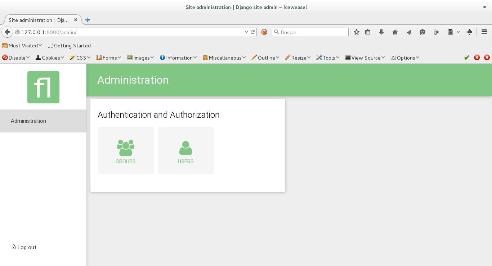
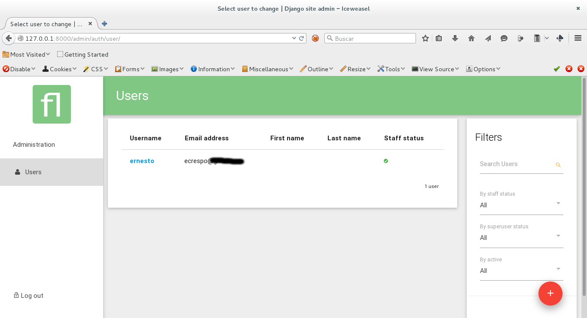

Darle estilo material design a Django (parte 1, el admin)
Posted on dom 26 abril 2015 in Tutorial Python • 2 min read
Continuando con los artículos sobre Django.
En este caso se tocará el tema de usar en el admin y formularios un estilo llamado Material Design (desarrollado por Google para Android), la idea es que nuestro backend tenga ese estilo. Para ello se tiene una aplicación de Django llamada Django-material.
La documentación de django-material la pueden ver en el siguiente enlace.
Instalación:
Para instalar django-material se ejecuta el comando pip:
pip install django-material
Se crea el proyecto prueba:
django-admin startproject prueba
Se tiene los siguientes directorios y archivos:
prueba
├── manage.py
└── prueba
├── __init__.py
├── settings.py
├── urls.py
└── wsgi.py
En settings.py se agregan las aplicaciones :
-
material
-
material.admin
Al final se tiene lo siguiente en la sección de aplicaciones:
# Application definition
INSTALLED_APPS = (
'material',
'material.admin',
'django.contrib.admin',
'django.contrib.auth',
'django.contrib.contenttypes',
'django.contrib.sessions',
'django.contrib.messages',
'django.contrib.staticfiles',
)
Nota: material.admin debe estar antes que admin.
Se ejecuta manage.py migrate:
ecrespo@grievous:~/django/prueba$ ./manage.py migrate
Operations to perform:
Synchronize unmigrated apps: staticfiles, material, messages, material_admin
Apply all migrations: admin, contenttypes, auth, sessions
Synchronizing apps without migrations:
Creating tables...
Running deferred SQL...
Installing custom SQL...
Running migrations:
Rendering model states... DONE
Applying contenttypes.0001_initial... OK
Applying auth.0001_initial... OK
Applying admin.0001_initial... OK
Applying contenttypes.0002_remove_content_type_name... OK
Applying auth.0002_alter_permission_name_max_length... OK
Applying auth.0003_alter_user_email_max_length... OK
Applying auth.0004_alter_user_username_opts... OK
Applying auth.0005_alter_user_last_login_null... OK
Applying auth.0006_require_contenttypes_0002... OK
Applying sessions.0001_initial... OK
````
Se crea el usuario administrador del proyecto:
```python
./manage.py createsuperuser
Username (leave blank to use 'ecrespo'): ernesto
Email address: ecrespo@
Password:
Password (again):
Superuser created successfully.
Se ejecuta el servidor web de django:
ecrespo@grievous:~/django/prueba$ ./manage.py runserver
Performing system checks...
System check identified no issues (0 silenced).
April 26, 2015 - 16:22:53
Django version 1.8, using settings 'prueba.settings'
Starting development server at http://127.0.0.1:8000/
Quit the server with CONTROL-C.
Se muestra la imagen del inicio de sesión del admin de Django:

Se muestra la imagen del admin luego de iniciar sesión:

La siguiente imagen muestra la sección de usuarios del admin de Django:

En siguiente artículo se explicará como darle el estilo material design a los formularios de una aplicación.
¡Haz tu donativo! Si te gustó el artículo puedes realizar un donativo con Bitcoin (BTC) usando la billetera digital de tu preferencia a la siguiente dirección: 17MtNybhdkA9GV3UNS6BTwPcuhjXoPrSzV
O Escaneando el código QR desde la billetera: